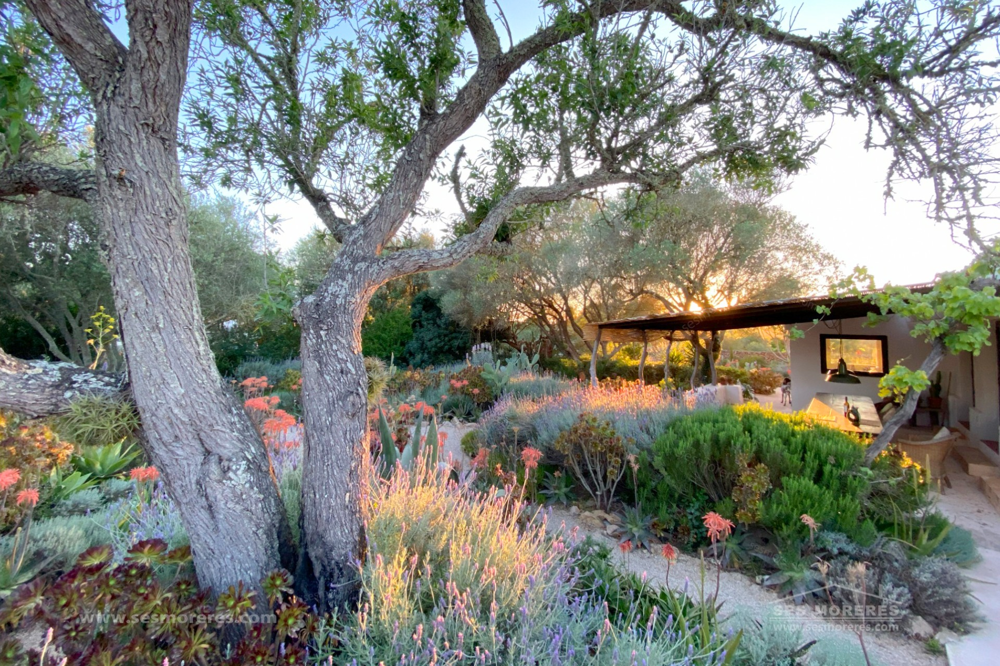

€990.000
Alaior, Menorca
Open the listingPunch-above character under €1M: reformed 2021 campo house with special soul — landscape-architect native garden (published in magazines), two parcels linked by a curious tunnel, sunset kitchen outlook to Alaior, garage, solarium terrace and a small private pool recovered from an old safareig. Privacy and personality over sleek-only.
Opened 7 Sep 2026. Asking 990.000 €. Specs on card: 169 m² / 3.890 m² / 3 bed / 2 bath; copy also cites ~3.797 m² across two parcels. Energy certificate exempt. Distinct from board Alaior/Ses Moreres stock.